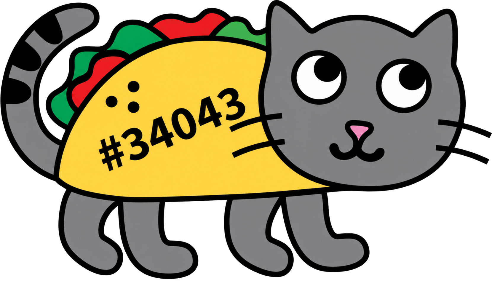

Acidity or basicity
The pH scale describes whether water is acidic, near neutral, or basic. A sudden change may stress organisms that are adapted to a smaller range.
ASK: Is the change repeatable?Pick a mission, follow the clues, and discover how water connects an entire wetland.
Choose a mission ↓
Choose a card to move to that activity. You will stay in the Student Science Lab—nothing here sends you back to the main website.
A wetland is an ecosystem where water shapes the soil, plants, animals, and tiny organisms living together. Open every card, choose the job that surprises you most, and be ready to explain why it matters.
Open water, muddy edges, plants, tree roots, and damp soil provide food, shelter, nesting places, and breeding areas for many species.
Slow-moving water lets sediment settle. Wetland plants and soils can also hold or transform some excess nutrients.
Wetlands give stormwater room to spread out and collect temporarily, which can reduce flooding downstream.
Wetland plants take in carbon dioxide, and waterlogged soils can keep some carbon stored underground.
Wetlands connect rainfall, streams, soil moisture, and groundwater across the surrounding landscape.
Roots hold soil while stems slow moving water, helping protect streambanks and shorelines.
Plants, fungi, bacteria, and tiny animals break down dead material and return nutrients to the food web.
Students and neighbors can observe wildlife, study changes, and learn how informed choices support stewardship.
Pick one wetland job. What might happen to plants, animals, or nearby communities if that job disappeared?
Road salt may be spread as crystals or salty liquid. Rain and melting snow dissolve it, and flowing water can carry the chloride through gutters, storm drains, streams, soil, and eventually wetlands.
Where does the salt begin? What moves it? Where can it end up?
Detective clue: Dissolved salt may be invisible even when it raises conductivity and TDS. A storm drain usually carries runoff to local waterways—it is not the same as a wastewater treatment pipe.
Retell the journey using these words: dissolve, runoff, storm drain, stream, wetland.
A sensor reading is a clue, not a final conclusion. Students should ask what changed, check the measurement again, and compare it with the location, weather, season, and other readings.
The pH scale describes whether water is acidic, near neutral, or basic. A sudden change may stress organisms that are adapted to a smaller range.
ASK: Is the change repeatable?Dissolved ions help water conduct electricity. Road salt can add ions, so conductivity may rise even when the salt cannot be seen.
ASK: Was there rain, melting snow, or runoff?This is oxygen mixed into water—not the oxygen inside H₂O. Fish, insect larvae, and other aquatic organisms depend on it.
ASK: Did temperature or water movement change?Temperature affects animal activity and the amount of oxygen water can hold. Sunlight, shade, season, and runoff can all influence it.
ASK: What were the weather and time of day?Team Tacocat’s sensors are not deployed yet. These explanations show what the future measurements will help students investigate.
Read each case carefully. Choose the action supported by evidence, then read the explanation before moving on. Mistakes are part of investigating—you can retry every case.
Every round draws 10 random questions from a 100-question student science bank. You will not see the same question twice in one round, and a new mix appears when you retry.
Progress is saved on this device. Complete both challenges and earn a perfect Water Detective score to unlock the certificate.
Locked · Finish the quiz
Locked · Finish every case
Earn a 6/6 Water Detective score to unlock your certificate.
Make a prediction, then open each card to reveal the answer.
False. Some dissolved pollutants are invisible, so water can look clear while its chemistry has changed.
True. Wetlands can hold stormwater and release it more gradually.
False. Scientists check surprising results and compare repeated measurements with weather, season, and location.
One short lesson, using activities already built into the project.
How could one change in water quality affect plants, animals, and people throughout a wetland?